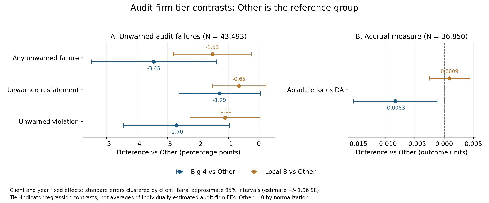

四大事务所效应
概述
本章考察四大事务所的客户风险差异、选择与预警机制、换所检验及财报信息的市场反应。客户群差异和认证机制线索较明确，但同一客户换入四大后的改善并不一致。
核心结果
四大客户在截面上表现出更低的审计失败率，且市场对其财报信息给予更强的认证溢价；但客户进退与预警后的风险差异表明，这一优势很大程度上由“客户筛选与风险组合动态调整（client selection & portfolio rebalancing）”驱动，而非对同一客户带来无差异的增量治理改善。
核心实证发现：
- 审计失败率显著分层。 全样本中，四大、本土八大与其他事务所的综合审计失败率分别为 2.33%、6.60% 和 8.71%。在标准无保留意见子样本中，四大的失败率依然显著更低，表明这一差距并非仅由出具意见的类型构成差异所致。
- 市场对正向财报信息的认证溢价。 在使用公告前 180 天内分析师预测的样本中，四大和本土八大客户的正向盈余惊喜（earnings surprise > 10%）对应着显著更强的公告期股价反应；而在使用较旧分析师预测的样本中，未能显现类似的分层模式。
- 风险意见驱动客户进退与预警缓冲。 四大客户收到重大审计意见（MAO）后，次年退出四大的概率显著上升 35.16 个百分点；非四大客户收到 MAO 后，次年进入四大的概率下降 0.293 个百分点。对于已被出具风险预警（MAO 或持续经营不确定性 GC）的存量客户，四大客户在次年的违规发生率分别显著低 5.30 和 8.87 个百分点。
- 换所证据揭示筛选而非治疗效应。 企业换入四大后承担了显著的审计费用溢价（对数费用增加约 0.370，换出减少约 0.242）；但在静态与动态双向固定效应模型下，同一企业换入四大后在财务重述与应计盈余质量上未出现持续且一致的改善，表明截面上的高质量更多体现为高质量客户与高声誉事务所的匹配结果。
Panel A 考察风险预警对四大客户退出与非四大客户进入的动态影响：
\[ \operatorname{Transition}_{i,t+1} = \beta M_{it} + \mathbf{X}_{it}'\gamma + \alpha_i + \lambda_{j(i,t),t} + \varepsilon_{it}. \]
Panel B 在全样本中检验四大与风险审计意见的交互效应：
\[ Y_{i,t+h} = \beta_B Big4_{it} + \beta_M M_{it} + \beta_{BM}(Big4_{it} \times M_{it}) + \mathbf{X}_{it}'\gamma + \alpha_i + \lambda_{j(i,t),t} + \varepsilon_{it}, \qquad h \in \{0, 1\}. \]
其中 \(M_{it}\) 分别为出具重大审计意见（MAO）或持续经营不确定性意见（GC）的指示变量；\(\beta_B + \beta_{BM}\) 捕捉已获风险预警客户在四大下的增量违规与失败差异；\(Y\) 分别对应当期审计失败、次年公告违规或次年财务重述。两式均控制公司固定效应（firm FE, \(\alpha_i\)）与行业×年份固定效应（industry-year FE, \(\lambda_{j(i,t),t}\)），并在公司层面聚类标准误。
市场反应事件研究设定。 基于盈余公告日前后的日度交易数据，估计正向盈余惊喜对对数股价的动态冲击：
\[ \log P_{i,t,d} = \sum_{k \ne -1} \beta_k^g \bigl(S_{it} \times \mathbf{1}\{\tau_{itd}=k\}\bigr) + \alpha_{it}^g + \lambda_{\tau_{itd}}^g + \delta_d^g + \varepsilon_{itd}, \qquad G_{it}=g. \]
\(S_{it}\) 为正向盈余惊喜处理组（实际盈利超出分析师最新预期 10% 以上，对照组为预测误差在 \([-10\%, 10\%]\) 区间）；\(g\) 分别对应四大、本土八大与其他事务所组别。模型吸收公司×年份固定效应、事件时间固定效应与交易日固定效应，标准误在公司×年份层面聚类。


治理效应与换所动态 · 客户选择机制全部面板 · 市场反应与认证讨论
样本与基准控制变量。 实证分析基于 1990—2024 年 A 股上市公司非平衡面板。控制变量集统一定义如下：\(C_F\) 包含规模（size）、杠杆（lev）、亏损指示（loss）、资产回报率（roa）、Altman Z-score（zscore）、杠杆变动（chg_lev）、年报披露时滞（report_lag）、经营现金流（cfo）与上市年限（age）；\(C_M\) 在 \(C_F\) 基础上加入外部融资需求（financing）与滞后一期持续经营意见（L.gc）；\(C_E\) 额外包含营业收入增长率、账面市值比与操纵性应计利润；\(C_A\) 为基准规模与经营财务指标；\(C_V\) 在 \(C_F\) 基础上补充市值与成长性指标。变量缺失值采用行业—年份中位数结合全样本中位数填充，并引入缺失指示变量。
事务所差异与换所模型。 截面基准设定为 \(Y_{it} = \beta Big4_{it} + \mathbf{X}_{it}'\gamma + \text{FE} + \varepsilon_{it}\)。换所分析设定为 \(Y_{it} = \theta D_{it}^{up/down} + \mathbf{X}_{it}'\gamma + \alpha_i + \lambda_{s(i),t} + \varepsilon_{it}\)，区分单向换入（以持续聘用非四大为对照）与换出（以持续聘用四大为对照）样本，要求发生前后具备连续观察期，标准误按公司层面聚类。
1. 中国审计市场的分层与长期趋势
将事务所分为四大（Big 4）、本土八大（Local 8）和其他事务所（Others）。按审计费用衡量的市场份额展现了市场结构的演化轨迹；而质量比较则以公司—年为基本观测单元。

四大客户在资产规模、审计费用及风险结构上明显不同。由此，四大与其他事务所的结果差异可能同时来自客户选择、审计服务以及事件被监管发现的过程。
1.1 市场质量的宏观趋势
为考察全市场审计质量的长期演进，模型采用三基线检验：
\[ Y^m_{it} = \alpha_i + \sum_{\tau \ne 2000} \eta^m_{\tau, s} \mathbf{1}\{\text{Year}=t\} + \mathbf{X}_{it}'\gamma_m + \varepsilon^m_{it}. \]
以 2000 年为基期，吸收公司固定效应并按公司聚类。三条基线分别对应：(1) 全部非平衡活跃公司；(2) 长期存续基线（2000—2024 年观测不少于 22 年）；(3) 本地五年连续基线（\([t-2, t+2]\) 窗口连续观测）。
审计失败趋势
综合失败率在各基线下均呈现 2008 年后上升、2016—2018 年达到阶段高点后逐步回落的非单调模式；长期存续样本的上升幅度更为明显。

财务重述与财务违规趋势提供了失败率的结构性拆解：单个指标的变化既反映审计质量，也受到监管披露政策与执法力度的影响。


盈余管理与指标覆盖率
Jones 异常应计绝对值也展现出类似的宏观演变特征：

主要审计质量指标在 2000—2024 年间的覆盖率如下：违规、重述与审计意见指标保持全覆盖；审计费用在 2012 年后基本全覆盖；而应计盈余管理等财务指标覆盖率受披露完备性约束呈现一定波动。

1.2 事务所类型横截面特征
下表汇报不同事务所层级的客户群特征比较。四大客户的非标意见率仅为 2.24%，显著低于本土八大（4.51%）与其他事务所（9.44%）；审计收费均值约为本土八大的 3.7 倍，客户市值均值约为 6.9 倍。

2. 截面事实：四大客户的审计失败更少
本节确立基准事实：“未预警失败”定义为发生财务重述或违规、且当年未被出具非标意见的联合事件（\(P(\text{AnyFailure}=1, \text{MAO}=0)\)）。
2.1 重述公告时滞
重述通常在问题会计年度之后 1 至 3 年才公告披露。下图展示实质性重述的时滞分布：因此，表中的重述率按被重述年度归属，代表事后回溯确认的报告失真。

2.2 审计失败率分层
全样本中，综合审计失败率呈现清晰梯度：四大为 2.33%，本土八大为 6.60%，其他事务所为 8.71%；在标准无保留意见样本中，该指标依然分别为 2.08%、5.73% 和 7.18%。重述与违规单项亦呈现相同排序。

标准无保留意见样本中的跨年份发生率对比同样证实了四大的显著优势：


2.3 客户与事务所的 AKM 排序
为了在控制公司个体固定效应的同时分离事务所质量，我们估计公司、事务所和年份三向固定效应的 AKM 模型：
\[ Y_{ift} = \mathbf{X}_{it}'\gamma + \alpha_i + \psi_f + \lambda_t + \varepsilon_{ift}. \]
其中 \(\psi_f\) 为事务所固定效应，\(\alpha_i\) 为公司固定效应。

以 Other 为基准，控制客户和年份固定效应后，四大与本土八大的未预警综合失败系数分别为 −0.0345（p=0.001）和 −0.0153（p=0.020）；四大相对本土八大的差异为 −0.0192（p=0.048）。违规方向一致，四大相对 Other 为 −0.0270（p=0.002）；重述为 −0.0129（p=0.058），证据较弱。Jones 异常应计绝对值中，四大相对 Other 为 −0.0083（p=0.022）。

注：点为 Big 4、Local 8 相对 Other 的估计系数，Other 归一化为零；横线为系数 ±1.96 倍聚类标准误的近似 95% 区间。失败指标以百分点表示，应计指标保留原单位。原输出对应 \(Y_{it}=\beta_B\mathbf{1}(Big4)+\beta_L\mathbf{1}(Local8)+\alpha_i+\lambda_t+\varepsilon_{it}\)，控制客户与年份 FE、按客户聚类，未额外加入财务控制。这是事务所类别的条件差异，不是对逐家事务所估计的 FE 取均值后作差；不能直接解释为四大的因果服务效应。
事务所 FE 的完整分布与客户—事务所联合散点图


截面事实的推论与疑问： 上述截面比较与 AKM 排序确立了四大客户更少发生审计失败的经验事实。但这究竟源于四大对企业财报生产的“直接治理改善（Treatment Effect）”，还是源于“优质客户与顶级事务所的主动匹配（Selection / Sorting）”？回答这一问题的关键在于检验企业在更换事务所前后的动态变化。
3. 治理效应检验：企业换入与换出四大后的动态变化
如果四大具有直接的治疗效应，那么同一家企业换入四大后，其审计失败率和重述率应当显著下降；换出四大后则应反向上升。
3.1 换所 DID 基准结果
下表汇报换入四大对未预警审计失败的静态 DID 估计结果：换入四大的综合失败平均系数为 \(-2.66\) 个百分点，违规为 \(-2.01\) 个百分点；重述系数为 \(-0.92\) 个百分点且不显著。

然而，静态平均系数必须结合换所前趋势与动态路径检验来解读。
3.2 动态路径与多种前沿估计器检验
以换所前一年（\(k=-1\)）为基期，我们并列检验 TWFE、Sun & Abraham (2021)、Callaway & Sant’Anna (2021)、de Chaisemartin & D’Haultfœuille (2020) 以及 Stacked DID 估计结果。
TWFE 动态估计
换入后各期的综合失败与违规置信区间均跨越零线；且换入前两年的重述系数已经显著为负（\(-2.3\) 个百分点），存在显著的事前趋势（pre-trends）。换出四大后亦未出现对称的失败率上升。


Sun & Abraham (2021) 异质性稳健估计
换入后的综合失败、重述与违规动态系数均在零线附近摆动，未能证实 TWFE 暗示的下降趋势。


Callaway & Sant’Anna (2021) CS-DID 估计
换入四大的平均综合失败效应为 \(-1.46\) 个百分点（95% 区间 \([-4.82, 1.90]\)，包含零线）；平均违规效应为 \(+0.23\) 个百分点。


de Chaisemartin & D’Haultfœuille (2020) 估计


堆叠事件研究（Stacked DID）与稳健性检验


在按市值加权或排除低市值对照公司后，估计结果依然未见显著下降：


3.3 审计费用与公司市值
与不显著的质量改善形成鲜明对照的是，审计收费呈现极其清晰的价格溢价：换入四大后审计费用对数增加约 0.370（约高出 45%），换出后减少约 0.242。同时，换入后企业市值对数上升 0.104。

核心谜题： 既然同一企业换入四大后承担了显著的溢价，却并未在事后显著降低审计失败率，那么四大在截面上的质量优势究竟来自何处？企业又为何愿意支付高额溢价？这引导我们转向第四节的“客户筛选”与第五节的“信息认证”。
4. 机制解析一：客户筛选与风险组合动态调整
如果四大并非通过“改造”劣质企业来提高质量，截面低失败率的根本成因便是动态客户筛选与风险组合管理：四大在事前严格甄选低风险企业，并在事后风险显现时迅速解除合作。
4.1 风险意见驱动客户进退
实证回归表明，风险预警直接改变了审计师与客户的绑定关系：
- 退出四大： 四大客户收到重大审计意见（MAO）后，次年退出四大的概率上升 35.16 个百分点（\(p<0.001\)）；收到持续经营意见（GC）后退出概率上升 20.39 个百分点（\(p=0.073\)）。
- 进入壁垒： 非四大客户收到 MAO 后，次年进入四大的概率下降 0.293 个百分点（\(p=0.017\)）。
- 预警客户的事后风险： 对于已被出具 MAO 的存量客户，四大客户的次年公告违规率比非四大低 5.30 个百分点（\(p=0.020\)）；对于收到 GC 的客户，次年违规率低 8.87 个百分点（\(p<0.001\)）。
这表明四大不仅更果断地“出清”高风险客户，而且即便对同一预警状态下的客户，四大组合内的企业真实违规倾向也更低。
4.2 客户筛选的证据与解释边界
数据分析表明，以综合失败为基准，四大 MAO 的标准 Type I 错误率（误报率）为 2.01%，低于非四大的 5.74%；Type II 错误率（漏报率）为 88.29%，高于非四大的 79.28%。因此，四大的优势并非源于“更激进地发放非标意见”，而是源于整体客户池本身的风险更低。
4.3 变更公告中的微观线索
对收到 MAO 后更换事务所的案例分析进一步佐证了双方的动态博弈：
- 深圳华强（2001→2002）： 数据库记录为辞任，公告称服务未达要求，改聘本土所；
- 退市拉夏（2019→2020）： 公告明确提及“合理控制审计成本”，源于收费与风险分歧；
- 卓郎智能（2019→2020）： 集团控股股东主导更换；
- 上海临港（2014→2015）： 重大资产重组导致审计机构重新洗牌；
- 新城控股（2023→2024）： 业务发展与整体审计需求调整；
- 鼎信通讯（2023→2024）： 连续服务超过十年，基于独立性与招投标程序轮换。
这些案例表明，客户流动是围绕风险控制、审计收费和治理安排展开的双向匹配与重新洗牌。
4.4 综合机制表：流动、预警与风险构成
Table M1 将客户进入、退出、预警后风险差异及财务特征整合汇报：


5. 机制解析二：信息认证与资本市场反应
既然四大的核心功能不在于将差公司改造好，那么四大收取的高额审计溢价体现了什么价值？实证证据表明，四大提供的是资本市场的信息认证（Information Certification）。
5.1 正向盈余惊喜与公告期股价反应
定义盈余惊喜为实际 EPS 超出分析师预测中位数的比例（\(Surprise > 10\%\)）。以公告前一交易日为基期，估计公告前后五个交易日的对数股价轨迹。

实证发现： 在公告日前 180 天内具备最新分析师预测的样本中，四大和本土八大客户在发布正向盈余惊喜后，股价跳升幅度显著高于其他事务所；而在预测信息陈旧的样本中，未见类似分层。
5.2 从财报生产质量到信息认证价值
这一发现将审计服务的核心价值从“企业内部生产监督”拓展至“资本市场信息验证”：
\[\text{四大严格筛选并维系优质客户} \longrightarrow \text{四大审计背书传递高信誉信号} \longrightarrow \text{投资者赋予财报更高可信度} \longrightarrow \text{正向盈利引发更强股价反应}\]
这种“认证服务”解释了为何企业在未获得生产质量显著提升的情况下仍愿意支付 45% 的审计费用溢价：能够进入并留在四大的客户池中，本身就是向资本市场传递自身质量与合规底线的重要信号。
6. 拓展分析：其他质量指标与局部证据
本节进一步考察盈余质量、监管门槛操纵与失败严重程度等替代口径。
6.1 应计与真实盈余管理
换入四大后，Jones 异常应计与真实盈余管理未见系统性下降；Dechow-Dichev 异常应计绝对值反而略升 0.034（\(p=0.006\)）。

6.2 ROE 监管门槛检验
在 0%、6% 和 10% 等配股与监管门槛附近，四大客户的聚集与盈余管理交互项未见一致的抑制模式。


6.3 失败严重程度与文本挖掘
严重违规的固定效应差异为 \(-1.78\) 个百分点；换入四大的系数为 \(-1.66\) 个百分点（10% 水平边缘显著）。严重程度的抑制证据主要局限于违规，在重述上未见显著改变。


6.4 子样本换所 DID
在财务困境（当年亏损或 Z-score 偏低）与长期任期子样本中，换入四大的失败率系数部分为负，但伴随较宽的置信区间。

6.5 其他质量指标的描述比较
在真实盈余管理分项、盈余平滑度与激进度、会计稳健性及隐含资本成本（ICC）等指标上，四大客户均未显现出单调占优的质量梯度。


7. 综合讨论与识别边界
综合全章证据，我们可以得出以下统一的理论与经验画像：
- 截面事实与因果谜题： 四大客户在审计失败率、财务重述率与会计违规率上均显著低于本土事务所；但企业换入四大后的准自然实验表明，这并非源于同一企业财报生产质量的显著因果提升。
- 筛选机制与动态组合调整： 四大依托事前进入壁垒与事后风险出清（MAO 后 35.16% 退出率），维持了一个整体低风险的客户组合。
- 信息认证与声誉溢价： 四大高额收费的本质是资本市场认可的信息认证价值。正向盈余在四大背书下获得更强的市场定价反应。
- 因果识别边界： 审计市场高度体现了客户与事务所之间的双向排序与匹配（Sorting & Matching）。在缺乏纯外生随机指派的前提下，单纯控制固定效应无法完全消除企业前瞻性选择偏差，因此不应将截面优势过度诠释为同质化的治理处理效应。
附录：审计意见与客户选择的全部回归汇总


待解决问题与补充材料
后续研究需进一步厘清客户退出的微观发起方（辞任 vs 改聘）与合同重置细节，并探索能有效剥离内生性匹配的制度性工具变量。
数据、程序与输出记录
估计程序归档。 00_big4_effect_inputs.do · 00_big4_effect_did_models.do · 26_client_selection_opinion_mechanism.do · 63_earnings_response_horizons.do